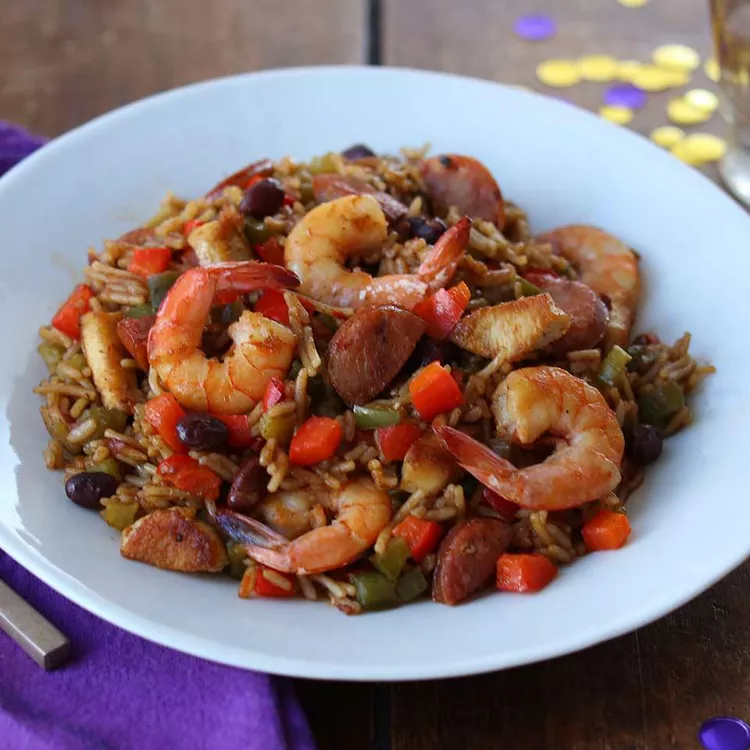

Jambalaya

What Is Jambalaya?
Jambalaya is a one-pot dish that typically includes rice, vegetables, meat (such as sausage, chicken, or shrimp), and a variety of spices. The dish has roots in both Spanish and French cuisine and is enjoyed by many in the southern United States.
- Prep Time:15 mins
- Total Time:35 mins
- Yield:6 cups
- Cook Time:20 mins
- Servings:6
Ingredients
- 2 tablespoons oil, divided
- 8 ounces uncooked medium shrimp
- 8 ounces boneless, skinless chicken breasts, cut into bite-size pieces
- 4 ounces andouille sausage or kielbasa, cut into half-moon slices
- 2 medium ribs celery, chopped
- 2 small red and/or green bell peppers, chopped
- 1 large clove garlic, finely chopped
- 2 cups water
- 1 (5.6 ounce) package Knorr® Cajun Sides™ - Red Beans & Rice
How to Make Jambalaya
-
In large skillet, heat 1 tablespoon oil over medium high heat. Season shrimp with salt and pepper if desired. Cook shrimp until just pink, about 1 minute a side, remove and reserve (shrimp will not be fully cooked).
-
Season chicken with salt and pepper if desired and in same skillet, brown chicken on all sides, about 5 minutes, remove and reserve.
-
Add remaining tablespoon oil to skillet and cook sausage, stirring occasionally until browned, about 4 minutes.
-
Stir celery into skillet and cook until translucent, about 3 minutes. Add peppers to skillet and cook until slightly softened, about 2 minutes. Stir in garlic and cook until fragrant, about 30 seconds.
-
Add water and Knorr® Cajun Sides™ - Red Beans & Rice to skillet, stir to combine. Bring to a boil, cover, reduce heat slightly and simmer 5 minutes. Stir in reserved chicken and shrimp and cook 3 - 4 minutes more or until rice is tender. Let stand 2 minutes. Serve.